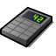
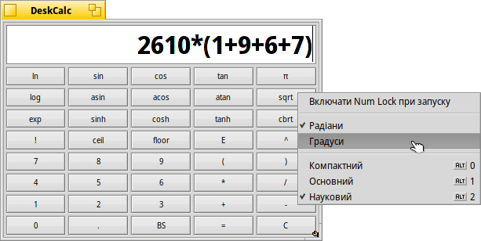

 DeskCalc (Калькулятор)
| Deskbar: | ||
| Розташування: | /boot/system/apps/DeskCalc | |
| Налаштування: | ~/config/settings/DeskCalc_settings |
DeskCalc – це простий калькулятор, який, тим не менш, має кілька корисних функцій, які не помітні на перший погляд.
DeskCalc розуміє набагато більше ніж пропонує його проста (сперше) клавіатура.
Окрім операторів +, -, *, /, %, ^ і констант pi and e підтримуються такі математичні функції:
acos, asin, atan, atan2, ceil, cos, cosh, exp, floor, log, log10, pow, sin, sinh, sqrt, tan, tanh.Спливаюче меню по правому кліку миші пропонує наступні пункти:
Автоматично активує цифровий блок клавіатури під час запуску DeskCalc. Переключає одиниці вимірювання кута. ALT 0 Мінімалістичний режим, який приховує клавіатуру. ALT 1 Стандартний вигляд DeskCalc. ALT 2 Показує додаткові кнопки для розширених обчислень. Коли справа доходить до введення даних користувачем, DeskCalc є досить поблажливим:
/, :, \\ – інтерпритуються як оператори ділення;
*, x – є допустимими символами для множення.
Крім того, майте на увазі, що . і , вважаються символами десяткового розділювача, а це означає, що Ви не повинні використовувати їх як розділювачі 1000.Ви можете змінити розмір калькулятора, щоб він відповідав Вашим потребам, а потім розмістити його на робочому столі як реплікант, перетягнувши символ у нижньому правому куті. Але слід впевнитись, що опція увімкнена на Панелі задач Deskbar.
Клавіатуру можна розфарбувати, якщо перетягнути колір з будь-якої панелі кольорів іншої програми, наприклад, Icon-O-Matic.
Ви можете переходити вгору або вниз по історії минулих обчислень за допомогою клавіш ↑ і ↓.
Ви можете виділити вміст поля вводу DeskCalc і перетягнути його в будь-яку програму. Або ж Ви можете перетягнути його у вікно Tracker чи на Робочий стіл і там буде створено текстовий файл з цим фрагментом.
Навіть краще, зворотний шлях також можливий:
Створіть фрагменти, як описано, на різних етапах обчислень і поверніться до них, перетягнувши їх назад в DeskCalc.
Або Ви можете перетягнути варіанти з обчисленнями безпосередньо з електронного листа в DeskCalc.DeskCalc можна використовувати у терміналі. Просто візьміть вираз у подвійні лапки, наприклад:
~> DeskCalc "sin(45)*(cos(12)+3.45)" 3.6536554673202546181795194727005826674359494735820338441084848
Примітка: У терміналі DeskCalc завжди використовуватиме радіани як одиницю виміру для тригонометричних функцій.